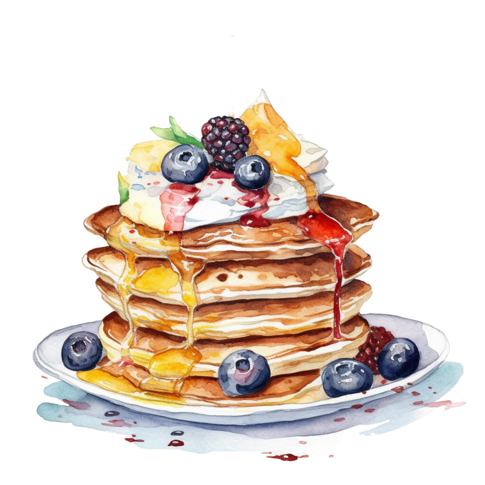
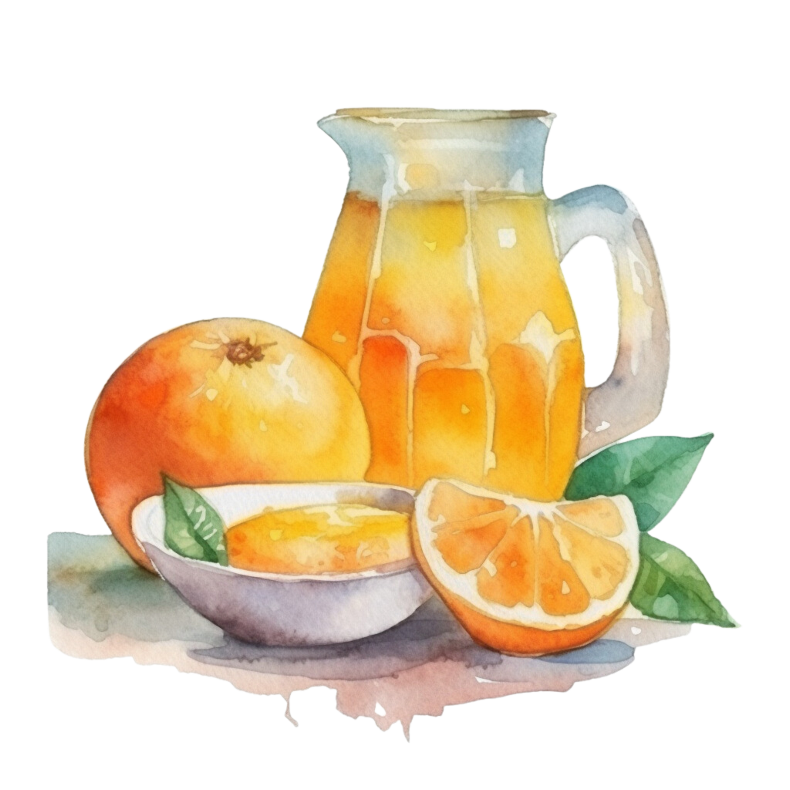
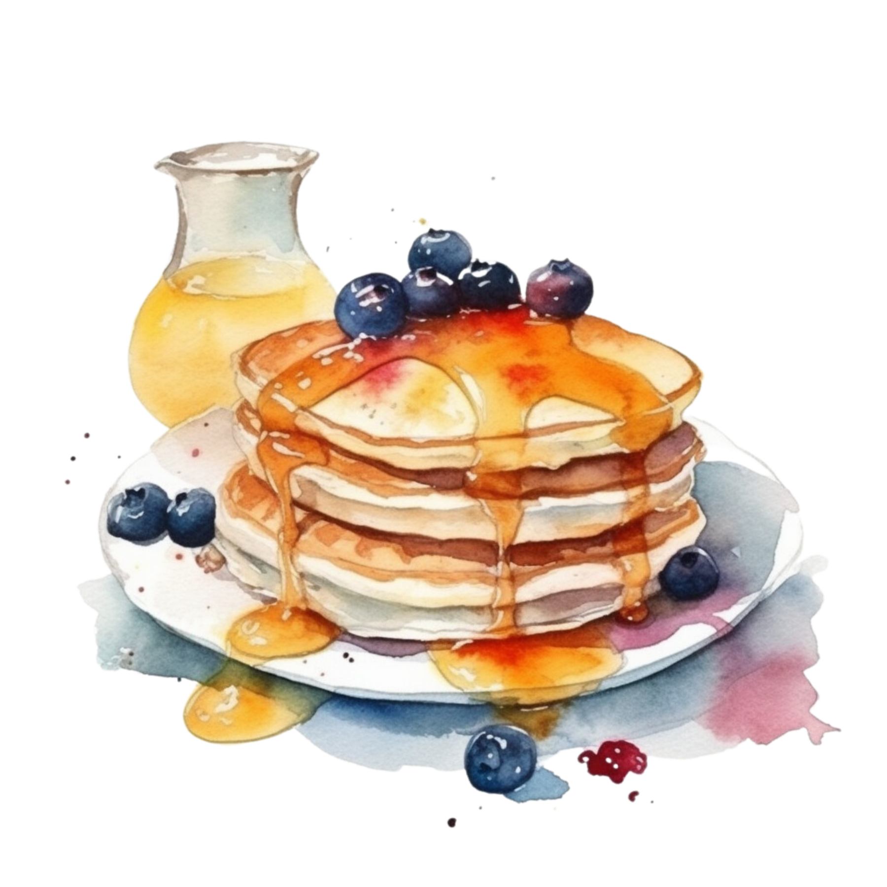
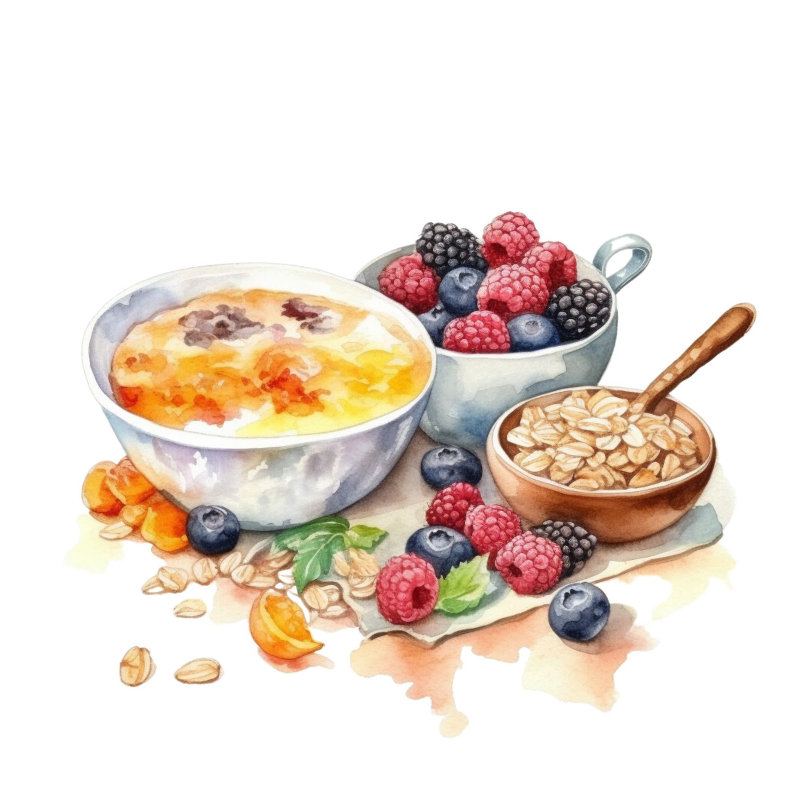

Breakfast Bites && Bytes
Breakfast Bites Recipes!




-
Breakfast Sausage Puffs
-
Muffin-Pan Breakfast Sliders
-
tater-tot-breakfast-casserole
-
french-toast-recipe
-
overnight-oats
-
breakfast-pizza
-
breakfast-muffins
-
cinnamon-baked-doughnuts
-
breakfast-nachos
-
chorizo-potato-breakfast-burritos
-
fruit-breakfast-pizza
-
breakfast-hash
-
sweet-hot-fried-chicken-and-waffles
-
bistro-breakfast-burger
-
chia-seed-pudding
-
Chicken and Waffles
-
Pancakes
-
Better Buttermilk Biscuits





1 teaspoon lemon zest (from 1 lemon)
2 cups mixed berries
Cinnamon-Sugar:
1 vanilla bean
1/2 cup sugar
1 tablespoon ground cinnamon
Directions:
-
1: Preheat the oven to 350 degrees F. Line a baking sheet with parchment paper.
2: Using a rolling pin, roll out the pizza dough to a thickness of about 1/4 inch. Transfer the pizza dough to the lined baking sheet and brush the dough with the melted butter. Sprinkle with 2 tablespoons Cinnamon-Sugar and bake until golden brown, about 10 to 15 minutes. Cool the pizza crust on a wire rack.
3: Meanwhile, in a medium bowl, mix together the cheese, cream, lemon juice, and zest.
4: Spread the cheese mixture over the cooled crust. Top with mixed berries and sprinkle with the remaining Cinnamon-Sugar. Slice like a pizza and serve.
Cinnamon-Sugar:
5: Cut the vanilla bean in half, lengthwise. Using the back of a knife, scrape along the inside of the vanilla bean to collect the seeds. Scrape vanilla bean seeds into a small bowl. Add sugar and cinnamon and stir to combine. Set aside in a small serving bowl.